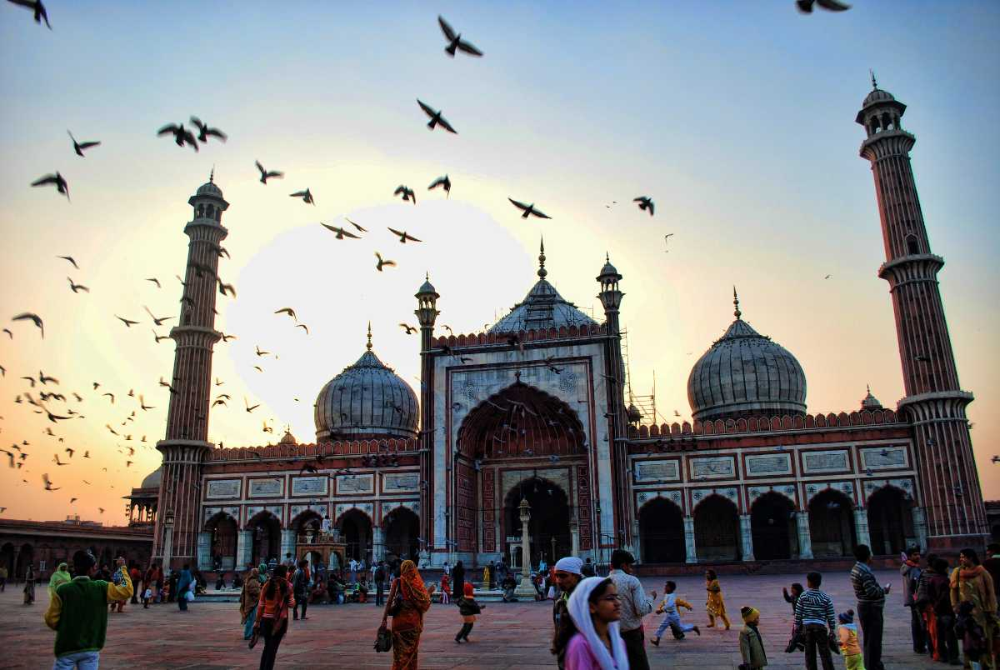

1
1
The Oldest Inhabited Places in the World
Situated on the banks of river Ganges and represented in the Parliament by the country's PM Narendra Modi, the holy city of Banaras or Varanasi is at least 3000 years old. According to Hindu Mythology, Lord Shiva found this city 5000 years ago.
2
2
Mysterious Anti-Gravity Hills In Ladakh, Magnetic Hill
With the anti-gravitational effect, this is the only magnetic hill in India. Landmarked by a yellow notice board that spells out instructions and asks you place your car on neutral gear right on the spot marked by white paint, this one will leave you in awe as your car will begin to move uphill on its own.
3
3
Mawsynram is the Wettest Place on Earth
Holding a Guinness record for highest average annual rainfall, this town in Meghalaya gets about 11,873 millimetres of rain owing to its proximity to the Bay of Bengal. The winter months of this region are spent in preparation for the six-month-long monsoon ahead.
4
4
The Largest Number of Vegetarians in the World
Are you a vegetarian? You will fit right in here. With the majority of the population following Hinduism, around 29%-40% of the people are vegetarians.
5
5
World's Largest Milk Producer
This is a world-record-breaking Fact About India. Love milk and milk products? Here's an interesting fact for you. Reaching over 155.5 million tonnes in 2015, India is the largest milk-producing country in the world.
6
6
There are Over 300,000 Mosques in India!
With 14.2% of the country's population being from the Muslim community, India happens to have the most number of mosques in the world. Some of the famous ones being Jama Masjid (New Delhi), Mecca Masjid (Hyderabad), Taj-Ul-Masjid (Bhopal), etc.

7
7
Bandra-Worli Sea Link Has steel Wires Equal to Earth's Circumference
This is a Fact About India that many probably don't know. Each of the cables is capable of holding 900 tons of weight. The entire establishment's weight is equivalent to that of 50,000 African elephants.
8
8
Biggest Family in the World
Living in his 100-room mansion in Baktawng village of Mizoram, Mr Ziona Chana is the head of the world's biggest family consisting of 181 members. He has 39 wives, 94 children, 14 daughters-in-law and 33 grandchildren.
9
9
World's First Hospital Train
Living true to its name, The Lifeline Express a.k.a the Jeevan Rekha Express is the world's first hospital train taking its services ranging from surgeries to cancer treatment to remote villages.
10
10
World's Highest Rail Bridge in Jammu
About 35 metres taller than the Eiffel Tower, the arch-shaped Chenab bridge in Jammu and Kashmir is the world's tallest rail bridge. It stands at the height of 1,178 feet over the river Chenab.